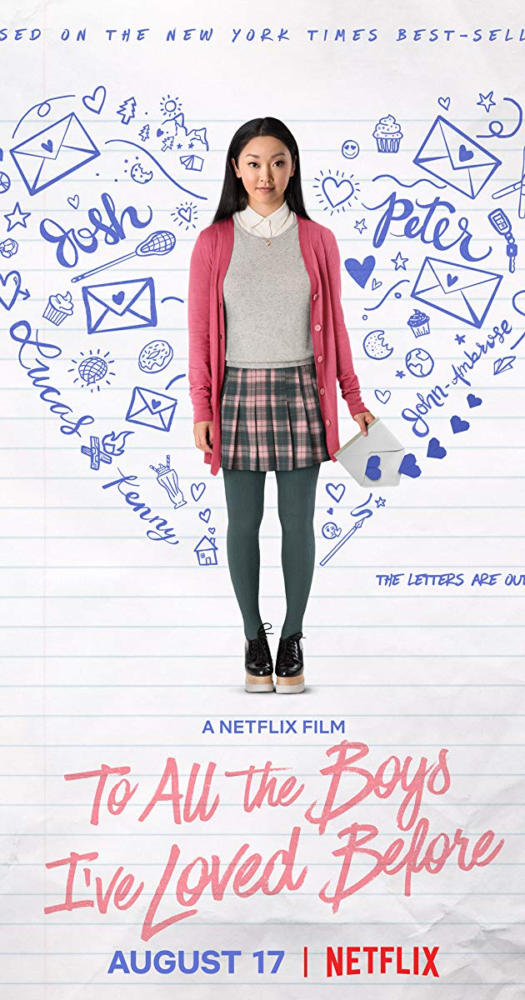
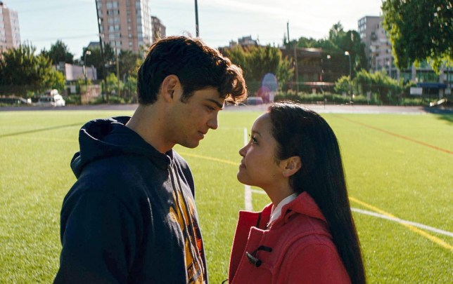
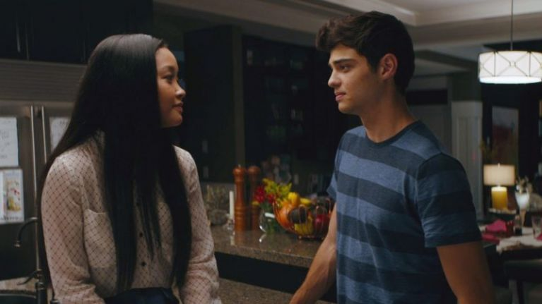

The rom-com of the decade, “To All the Boys I’ve Loved Before,” is a movie that is guaranteed to make you believe in a happily ever after. I watched this Netflix phenom more that 3 times and each time it brought a smile to my face. What’s so special is that it is such a soft, pure love story, you won’t be able to stop dreaming about it.
Peter Kavinsky, played by Noah Centineo is a magnet for popularity. His charm and jock like spirit will entice your soul. On the contrary, Lara Jean Covey is a shy, geeky girl who chooses to keep to herself. She imagines what love is like, but never acts on it in real life. Lara, played by Lana Condor writes love letters when she has a massive crush. She had five written, and one day, these letters were mailed out anonymously. The “Covinsky” love story starts when Peter wants to make his ex girlfriend, Gen, jealous, and Lara desperately needs to cover up the love she had for everyone who get her letter. Peter and Lara make a deal to fake date, under a contract.
Those who watched the movie immediately knew that those two love birds were going to end up falling in love with each other. In my opinion this was one of my favourite movies. The way the director, Susan Johnson, shows their journey is such a refreshing take on the golden 90’s love story. That was the main reason on why I was so hooked to this film. Also the way the duo looked together was so cute.It melted my heart when I saw them together. Their on screen off- off screen chemistry was nice and friendly. And lastly, for me personally, I loved it when Peter secretly started having feelings for Lara. When he kind of got jealous of Lara liking Josh and asked her if they could start this whole love thing, I felt that it was so adorable and that he was so lovable. Those secret notes he wrote and that chat they had when they were eating at a restaurant.AHHHHH!!! It was the cutest thing I’d ever seen. Even when writing it, it makes me feel so happy.
The moment Peter and Lara had a deep conversation about their families, we knew that this “Covinsky” love was real. They talked about Lara losing her mother, and Peter slowly opened up about how his father walked away from the family. We later see how soft his masculinity is portrayed through the movie, making him the dream boy. The two slowly let their guards down, get more comfortable and start showing affection.
Our very own Tiffany Haddish says, “the courtship Peter has for protagonist Lara is not cheesy. It grabs you by the hear in the moment. This movie can manufacture nostalgia for a time in my life that never existed.”
This movie is filled with the cutest scenes for teen girls, and even adults, to dream about.
Noah says, “I actually cheated and scrunched my back to get the role, since I was too tall to be paired with Lana.” He goes on and says that Lana is actually the messiest person on set and very similar to her character’s personality!
Peter Kavinsky writes her love letters and the most iconic scene....he put his hand in her back pocket and gives her a little twirl in the cafeteria!These refreshing acts of kindness separate it from the classic high school rom-coms.After watching the scenes, fans started shipping these two together in real life, proving how raw their acting was.
Condor said, “We had instant amounts of chemistry,” referring to Noah. “ It’s nice to have someone on the journey with me.” We wanted to answer this big question that the fans were asking so we had to ask the Lana Condor.
After our exclusive interview with Lana Condor, we found out that these two actually did have a spark but decided to focus on being professional for the movie!
After the movie was released, Noah Centineo rose to fame and many are calling him the “Internet’s Boyfriend.” His charisma in the movie really reached out to the audience. This movie was such a success that Netflix named it as one of its “most viewed original films ever with strong repeat viewing.”
Good news! There will be a TATBILB Sequel coming, after loaded requests from fans. The date hasn’t been confirmed yet. I guess we just have to keep counting the days down until we know!
I have watched this movie six times, and am still not tired of it! If you haven’t watched it yet, you are missing out!It will captivate you through the realness of the “Covinsky” love story. Be ready to cry tears of joy and dream upon finding the Peter Kavinsky to your Lara Jean. Enjoy!
Overall, I believe that it was worth the watch and that it would be a movie that would make it to my top ten:)
Click top to scroll to the beginning